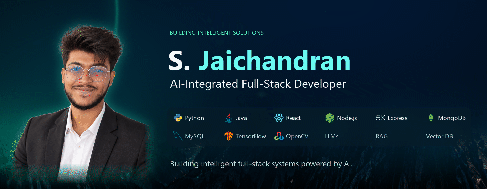
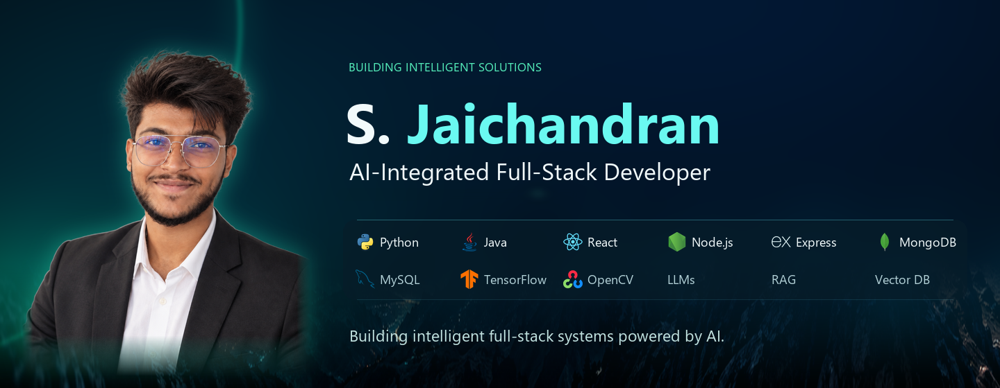
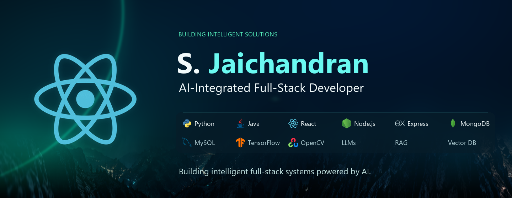
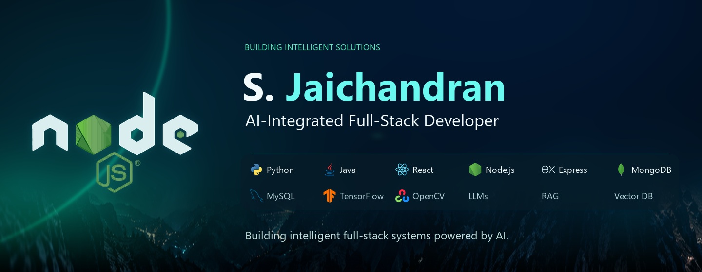
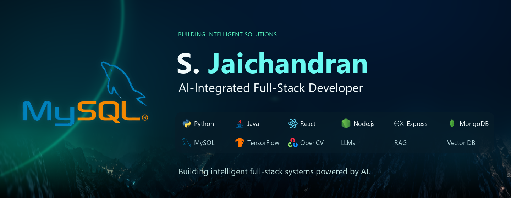
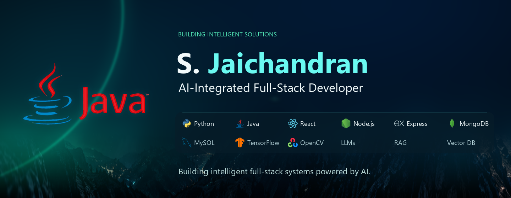
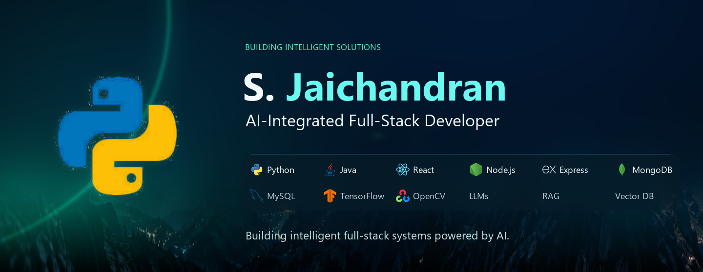

S. Jaichandran · Hero review
Installed approved hero · unchanged production assets · local review, not a published profile. View the complete README
Desktop · complete loop

Jaichandran 3s · technology stages 2s · scan transitions 0.6s · full loop 16.6s
Mobile · 390px display width
All six formed states





